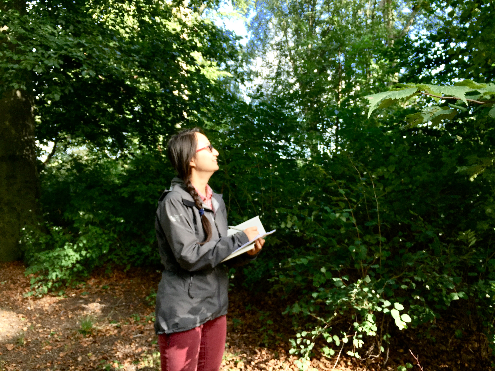

Welcome! My name is Yaquan and I am a MSc candidate in Nature Management at University of Copenhagen.
My research interests lie in Macroecology, functional ecology, and plant biogeography. Feel free to look at my research and my tutorials to learn more!